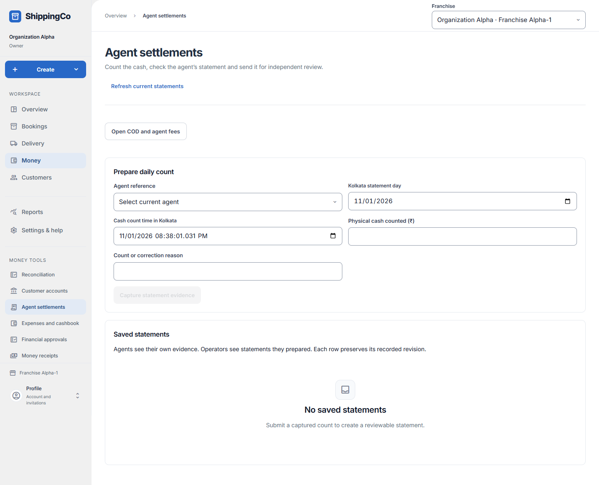
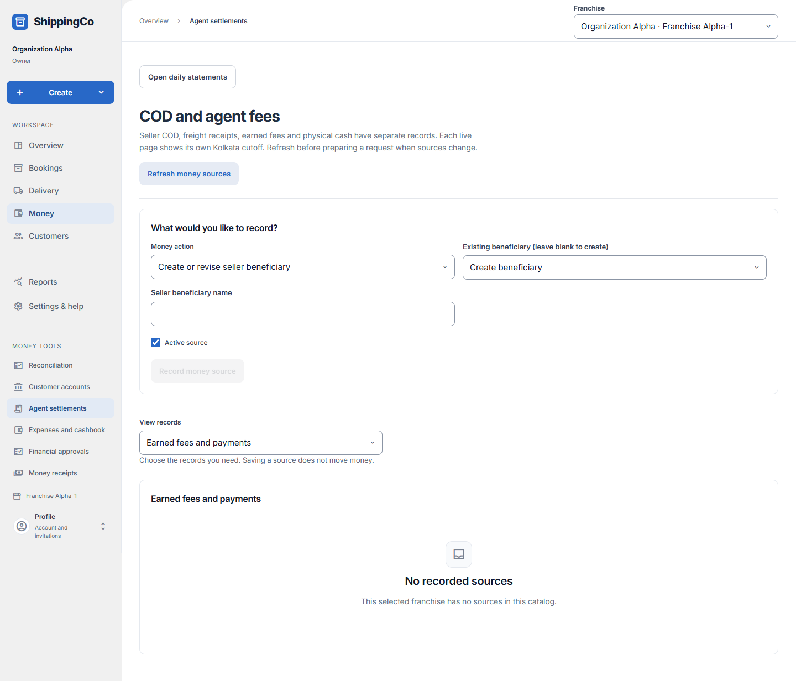

Agent daily statements
What this helps you do
- Capture an agent’s daily cash statement and send it for independent review.
Open this feature
- Money > Agent settlements.
- Check the active branch first. Available actions depend on your role and the selected record.


Prepare the daily count
- Choose Agent reference; delivery agents are restricted to their own identity. Enter Kolkata statement day, Cash count time in Kolkata, Physical cash counted and Count or correction reason.
- The count time must be on the statement day and cannot be in the future. Capture statement evidence, inspect the captured sources and difference, then Submit captured statement.
- Start a new count clears the current draft but retains earlier saved evidence.
Review, correct and export
- Open a day in Saved statements to inspect its exact revision. Agents see their own evidence; operators see statements they prepared.
- A different authorised administrator enters Independent review reason and selects Approve statement or Reject statement. Approval does not hand over cash or pay fees.
- Prepare linked correction creates a fresh count linked to the previous submission. Open prior revision shows the preserved earlier record.
- With export access, Capture statement CSV, then Download captured statement CSV. Check revision, captured status, cutoff and expiry; the saved export lasts 24 hours.
- Open COD and agent fees to work with source evidence. View records selects one catalogue at a time. Delivery agents can open cash handovers where offered; Open daily statements returns here.
Fields and when to use them
These fields belong to the actions above. Complete the fields for your selected action; optional filters may stay blank.
- Agent reference: Use the reference from the matching saved record or real supporting document. Do not invent one. Use when shown for the selected action.
- Kolkata statement day: Enter the kolkata statement day for this action, using the time zone shown. Required when this field is shown.
- Cash count time in Kolkata: Enter when the event really happened. Use the time zone named in the label. Required when this field is shown.
- Physical cash counted (₹): Enter the actual amount in rupees. Use no more than two decimal places. Required when this field is shown.
- Count or correction reason: Explain why you are making this request or change. Use the real business reason. Required when this field is shown.
- Independent review reason: Explain why you are making this request or change. Use the real business reason. Required when this field is shown.
If you need to retry
- No records: check branch, account or customer and filters. Use Load more where offered before deciding a record is missing.
- Invalid or missing value: read the form message, correct the draft, then review amounts and references again.
- Uncertain save: use the offered retry for the same request. Do not create a second payment, return, expense or application to guess whether the first saved.
- Changed evidence or policy: refresh current records and review them before a new request. A saved report retains its captured figures; create another report for current results.
About this guide
Checked against the current screen code on 1 November 2026. This explains app behaviour, not tax or accounting advice. Buttons and records can differ by role.